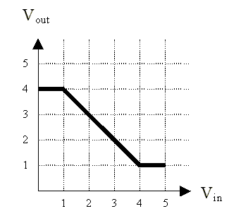
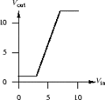

The digital abstraction
Problem 1.
The behavior of a 1-input, 1-output device is measured by hooking a
voltage source to its input and measuring the voltage at the output
for several different input voltages:
We're interested in whether this device can serve as a legal
combinational device that obeys the static discipline. For this
device, obeying the static discipline means that
if VIN <= VIL then VOUT >= VOH, and
if VIN >= VIH then VOUT <= VOL.
When answering the questions below, assume that all voltages are
constrained to be in the range 0V to 5V.
-
 Can one chose a VOL of 0V for this device? Explain.
Can one chose a VOL of 0V for this device? Explain.
-
What's the smallest VOL one can choose and still have the device obey
the static discipline? Explain.
-
Assuming that we want to have 0.5V noise margins for both "0" and "1"
values, what are appropriate voltage levels for VOL,
VIL, VIH, and VOH so that the device
obeys the static discipline. Hint: there are many possible choices,
just choose one that obeys the constraints listed above.
-
Assuming that we want to have 0.5V noise margins for both "0" and "1"
values, what is the largest possible voltage level for VOL that still
results in a device that obeys the static discipline?
-
Assuming that we want to have equal noise margins for both "0" and "1"
values, what is the largest noise margin we can achieve with this
device and still obey the static discipline?
Problem 2.
Inverter madness.
-
The following graph plots the voltage transfer characteristic
for a device with one input and one output.

Can this device be used as a combinational device in a logic
family with 0.75V noise margins?
-
You are designing a new logic family and trying to decide on values
of the four parameters VIL, VOL, VIH,
VOH that lead to non-zero noise margins for various
possible inverter designs. Four proposed inverter designs exhibit the
voltage transfer characteristics shown in the diagrams below. For
each design, either (1) specify suitable values of VIL,
VOL, VIH, VOH. or (2) explain why no
values for these parameters satisfy the static discipline.

Problem 3.
Static discipline.
-
Consider a combinational buffer with one input and one output.
Suppose we set its input to some voltage (VIN), wait for
the device to reach a steady state, then measure the voltage on its
output (VOUT) and find VOUT < VOL.
What can we say about VIN?
-
Now consider an inverter. Suppose we set its inputs to some voltage
(VIN), wait for the device to reach a steady state, then
measure the voltage on its output (VOUT) and find
VOUT > VOH. What can we say about
VIN?
Problem 4.
Ternary Logic.
Ternary is a term referring to the number system in base 3.
Consider a convention in which a ternary digit is presented as an
electric voltage between 0 and 10 V. Let 0-1 V represent a valid "0"
output, 4-6 V a valid "1" output and 9-10 V a valid "2" output.
-
Assuming noise margins 1 V wide, show the mapping of logic levels to
voltages for this ternary system. Include valid logic-level outputs,
noise margins and forbidden zones. Your chart should resemble the
following diagram, except of course it will incorporate 3 valid signal
levels:
-
Graph the transfer characteristic for a device capable of acting as a
ternary logic buffer, i.e., a device that produces at its output the
same logic level present at its input, as shown below:

-
Can a device with the following transfer characteristic be used as
a ternary logic buffer? Why or why not?

-
How many bits of information are carried in a ternary signal on a single wire?
-
How many different combinations of valid logic levels can be encoded
on three ternary wires? How many bits of information does this
represent? How many wires would be needed to carry this same amount
of information in binary?
-
What is the information flow in bits/second for three ternary wires if
a new set of values is sent every 10 ms? What is the information flow
in bits/second for three binary wires if a new set of values is sent
every 10 ms?
Problem 5.
Barracks logic is built out of sleeping soldiers covered by
electric blankets. Each blanket has a control switch with discrete
control settings ranging in 5-degree (Fahrenheit) intervals from 0 to 50
degrees. The temperature of a soldier covered by one or more electric blankets
will be the sum of the ambient temperature in the barracks
plus the setting on the controller for each blanket.
Each soldier has a preferred sleeping temperature, which varies from
individual to individual but is always within the range of 60 to 80
degrees, inclusive. If a soldier's temperature departs from
her preferred temperature, the soldier will wake up once
every minute and adjust the control by one 5-degree increment in the
appropriate direction (if the solider is cold, the solider will
increase the setting on the control, and vice versa). The soldier will
continue these adjustments by 5-degree increments until she once again reaches
her preferred temperature (and goes to sleep) or runs out of settings (in
which case she grumbles angrily in bed).
If soldiers are allowed to control their own blankets, each will
soon reach their preferred temperature and slide into nocturnal bliss
(assuming a suitable ambient temperature). The interesting aspects
of barracks logic result from switching the controls of the various
blankets to different soldiers. Inputs to the system are
accomplished by placing a few controls in the hands of outsiders, and
outputs are read from the control settings of certain soldiers
designated by the logic designer.
-
Draw the graph of output control setting vs. input control
setting for a typical soldier in steady state. Assume an ambient
temperature of 40 degrees. Suggest good choices of the
valid regions for the two logical values, the forbidden zone, and the
noise margins. Let logical 0 be when a control is completely off
and logical 1 be when the control is completely on (or at the highest
setting).
-
List some sources of noise that justify the need for noise margins.
-
Even though it is the middle of February, a sudden warm spell raises
the ambient temperature in our barracks logic system to 55 degrees.
Sketch a new graph of output control setting vs. input control setting
in the warmer barracks.
-
Over what range of ambient temperatures will barracks logic function
reliably?
-
Does the following arrangement perform a useful function? What is it?

-
To create a system with multiple inputs, we allow several blankets to be
placed over a single soldier. What is the maximum fanin possible in
barracks logic if 170 degrees is the highest temperature a soldier
can tolerate without his characteristics being permanently altered?
Problem 6.
Bread and Circuits, Inc. has discovered an interesting electronic
device (a Z-module) which is made using a single yeast cell, a speck
of flour, and a grain of salt. The Z-module has two inputs carrying
voltages VA and VB and a single output carrying VC. The output VC
settles, after a 10ns period of stable input voltages, to the product
of the input voltages restricted to range of 0V to 2V. In other
words,
| VC = |
VA * VB when 0 <= VA * VB <= 2 |
| 2 when VA * VB > 2 |
Assume that the Z-module treats negative input voltages as if they were 0.
B&C is trying to make a logic family using Z-modules. As a
starting point, they claim that

constitutes a valid combinational buffer under the proper
voltage-to-logic representation conventions and will yield reasonable
noise margins.
-
Which, if any, of the following proposed voltage thresholds yields a
valid buffer with positive noise margins?
A. VOL = 1.5V VIL = 1.6V VIH = 1.7V VOH = 1.8V
B. VOL = 0.7V VIL = 0.9V VIH = 1.1V VOH = 1.3V
C. VOL = 0.1V VIL = 0.3V VIH = 1.7V VOH = 1.9V
D. VOL = 0.5V VIL = 0.5V VIH = 1.5V VOH = 1.5V
-
Determine the voltage thresholds that maximize the noise margins of
B&C's buffer. If the noise margins are not independent, maximize the
smaller of the two.
-
Ivan Idea, chief logician at B&C, is exploring the use of a single
Z-module as a two-input logic gate, again with positive noise margins.
He suspects that a Z-module, under the appropriate logic conventions,
can be used for an AND or OR gate which obeys the static discipline.
Ivan's been at it for several weeks and needs your help.
Can you find a way to use a Z-module for an AND or OR combinational
device? If so, give the appropriate input and output voltage
thresholds and the function performed. If not, carefully explain why
the Z-module can't be used as AND or OR.
-
Ivan sidesteps the previous enigma by allowing himself the use of
several Z-modules as components of a single logic gate. He assumes
(and you may too) that noise enters the system only between logic
gates, not between the components of a single gate. He notes that
each of B&C's proposed buffers (using one Z-module) is an amplifier
with gain greater than one. Ivan reasons that by cascading many such
devices (as shown below), he can achieve arbitrarily high gain and
hence excellent noise margins.
 His plan is to use such a high-gain cascade on the output of a
Z-module to restore the validity of marginal signal levels. Describe
the voltage transfer characteristic (i.e, VIN vs. VOUT) of a cascade
of a large number of Z-modules (via an expression or sketch).
His plan is to use such a high-gain cascade on the output of a
Z-module to restore the validity of marginal signal levels. Describe
the voltage transfer characteristic (i.e, VIN vs. VOUT) of a cascade
of a large number of Z-modules (via an expression or sketch).
-
Is there any way by which many Z-modules can be used to build a
2-input AND gate whose noise margins are both greater than 0.75V? If
so, sketch an approach (giving a diagram and calculating the noise
margins). If not, give a brief but convincing explanation.
Problem 7.
Combinational construction rules
In lecture, we learned two basic principles regarding the class of
combinational devices. The first allows us to build a combinational
device from, e.g., electronic components:
- A combinational device is a circuit element that has
- one or more digital inputs
- one or more digital outputs
- a functional specification that details the value of each
output for every possible combination of valid input values
- a timing specification consisting (at minimum) of an upper
bound tpd on the required time for the device to compute
the specified output values from an arbitrary set of stable, valid
input values.
while the second allows us to construct complex combinational
devices from acyclic circuits containing simpler ones:
- A set of interconnected elements is a combinational device if
- each circuit element is combinational
- every input is connected to exactly one output or to some vast
supply of 0's and 1's
- the circuit contains no directed cycles
In this problem, we ask you to think carefully about why these rules
work - in particular, why an acyclic circuit of combinational devices,
constructed according to the second principle, is itself a
combinational device as defined by the first. You may assume for the
following that every input and output is a logical 0 or 1.
Consider the following 2-input acyclic circuit whose two
components, A and B, are each combinational devices:

The propagation delay - the upper bound on the output settling time
- for each device is specified in nanoseconds. The functional
specifications for each component are given as truth tables detailing
output values for each combination of inputs:

-
Give a truth table for the acyclic circuit, i.e. a table that
specifies the value of z for each of the possible combinations of
input values on x and y.
-
Describe a general procedure by which a truth table can be computed
for each output of an arbitrary acyclic circuit containing only
combinational components. [HINT: construct a functional specification to
each circuit node].
-
Specify a propagation delay (the upper bound required for each
combinational device) for the circuit.
-
Describe a general procedure by which a propagation delay can be
computed for an arbitrary acyclic circuit containing only
combinational components. [HINT: add a timing specification to each
circuit node].
-
Do your general procedures for computing functional specifications and
propagation delays work if the restriction to acyclic circuits is
relaxed? Explain.
Problem 8.
If you are given the following 2-input and 2-output combinational
block:
with the following functional description: The output X is the the
logical complement of the input A, and the output Y is the the logical
complement of the input B. And valid ouputs are guaranteed after
valid inputs have been established for 1 second.
-
Does this device adhere to the static disipline?
-
Suppose that the output X is connected to the input B, what
output would you expect?
-
Suppose the functional description was changed to the
following: The ouput X is a 1 if both A and B are "0", and
Y is a 1 if either A or B but not both are "1".
Does this change the answer the previous question?